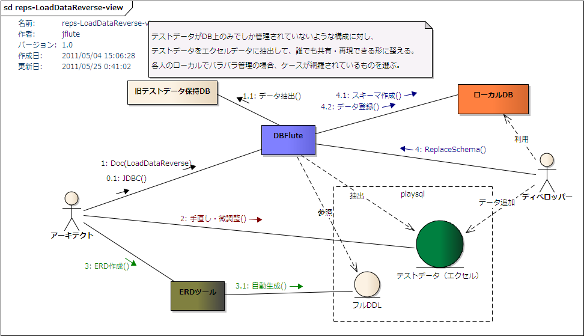

DataXlsTemplate
- LoadDataReverseとして再出発
- DataXlsTemplateとは？
- DataXlsTemplateの作成方法
- FK順序の考慮
- 長いテーブル名の考慮
- 大量件数のデータの場合
- LoadDataReverse
- 細かい仕様
LoadDataReverseとして再出発
この DataXlsTemplate は、LoadDataReverse という機能に変更されました(@since 0.9.8.4)。
以降の内容は、それまでのバージョンを利用されている方のためのページとなります。
DataXlsTemplateとは？
DB上の(一部の)データをエクセルデータに出力したもので、オプションによりDocタスクで自動生成されます。 主に以下の二つの目的があります。
- エクセル形式でデータベースの中のデータを閲覧する
- ReplaceSchema のデータ登録で利用するエクセルデータの土台
厳密なデータダンプではない
この機能は、本番の業務データの移行などで利用できるデータダンプ(DataDump)ではありません。 人の目で見る、もしくは、手動での調整を入れて ReplaceSchema におけるエクセルデータの土台にする、という目的のものです。 もし、業務の一環としてのデータダンプを目的とするなら、もっとデータの精密度を高めたり、もっと色々な状況に対応できるようにしたりする必要があるでしょう。
DataXlsTemplateの作成方法
出力レコード数の設定(出力設定)
この機能は、オプションです。documentDefinitionMap.dfprop の dataXlsTemplateMap の recordLimit を設定すると DBFluteクライアント/output/doc/data 配下に dataxls[セクション番号]-xxx.xls という形式の名前で出力されます。
共通カラムの出力有無
デフォルトでは共通カラムは出力されません。ReplaceSchema には共通カラムに対して自動設定を行うための機能が備わっているため、エクセルデータの土台として不要となることが考えられます。
共通カラムを出力したい場合は、documentDefinitionMap.dfprop の dataXlsTemplateMap の isContainsCommonColumn を有効にします。
FK順序の考慮
ReplaceSchemaのエクセルデータの土台のためという目的を考慮して、FK順序を "ある程度" 考慮して順番でテーブルのデータが出力されます。 完全に厳密ではありませんが、単純な関連であればそのままの順番で ReplaceSchema に適用できるでしょう。
長いテーブル名の考慮
エクセルのシート名に利用できる文字数に、(約)30文字までという制限があります。 それを超えるテーブル名がある場合は、ReplaceSchema の長いテーブル名対応の機能に沿った tableNameMap.dataprop を生成します。その場合のシート名は DBFlute が決め打った仮の名前になっているので、これを土台にする場合は手動で微調整すると良いでしょう。
大量件数のデータの場合
エクセルの最大行数を超えた場合
DBFluteがサポートしているエクセルの最大行数が 655xx なので、出力最大レコード数を 65000 と決め打ちで絞っています。もし、それを超える件数のデータが入っていて、かつ、recordLimit をそれ以上に設定した場合は、別途 TSV データとして出力されます。@since 0.9.8.3
TSV データへの出力は、一件ずつのフェッチ式になっているため、大量件数でもメモリ不足になることは基本的にありません。
全体的に行数が多い場合
逆に、エクセルの最大行数を超えていない場合で、全体的なテーブルの累積行数が多いとメモリ不足になる可能性があります。 (エクセルへの書き込みはライブラリの都合上、フェッチ式になっていないため)
その場合、タスクのメモリ設定を調整することで実行できるようになる可能性がありますが、 基本的には DataXlsTemplate そのような大容量のデータを落とすための機能ではありません。
LoadDataReverse
概要
ReplaceSchema のエクセルデータの土台のためという目的をさらに飛躍させて、 DB上のデータをそのまま ReplaceSchema で利用しようという機能です。@since 0.9.8.3
例えば、既に開発中でテストデータがDB上にしか存在していないような場合で、かつ、そのテストデータがテストする上でとても重要というような場合。 ReplaceSchema に移行するためには、そのテストデータを抽出して ReplaceSchema がデータ登録できる形式に調整してあげる必要があります。 何もなしでそれをやろうとすると大変ですが、DataXlsTemplate の LoadDataReverse がその作業を支援します。
LoadDataReverse概念図
図 : LoadDataReverse概念図 
利用方法
documentDefinitionMap.dfprop の dataXlsTemplateMap の isLoadDataReverse を有効にし、Docタスクを実行します。 すると、DataXlsTemplate が output/doc 配下ではなく、ReplaceSchema の playsql 配下のデータ領域に直接出力されます。
ReplaceSchema領域へ出力
Docタスクを実行した際のタスクログ(コンソール or dbflute.log)に、抽出されたテーブルとレコード件数が表示され、 エクセルデータが作成されます。(Eclipse上のリフレッシュは手動で)
- 出力先ディレクトリ
- DBFluteクライアント/playsql/data/[現在のdataLoadingType]/firstxls
- dataLoadingTypeは、デフォルトでは ut
- ファイル名
- loadxls[セクション番号]-xxx.xls
- セクション番号は 01 始まり
firstxls ディレクトリに出力されます。これは、通常の xls ディレクトリとは違い、TSVやCSVのデータ登録よりも先に実行されるエクセルデータの配置領域です。
セクションは、FK制約の階層構造を参考に、他のテーブルへの依存の少ないテーブルから上位のセクションに割り振られます。 よって、厳密ではありませんが、FK制約の階層構造のレイヤ数の分、セクション(エクセルファイル)が作成されます。 例えば、ExampleDB では、2 階層となり二つのセクションができあがります。実業務の複雑なテーブル構造では、セクションが 7, 8 ともっと増えることが想定されます。(10 を超えることもあるでしょう)
また、追加スキーマ(AdditionalSchema)やビュー(VIEW)対応のテーブルの出力は抑制されます。
手動による調整
この時点で、シンプルなテーブル構造、シンプルなデータであれば、このまま ReplaceSchema でデータ登録することも可能です。firstxls なので、TSVやCSV、通常のxlsよりも先に登録されます。 ただ、実業務では多くの場合そのようにはならないでしょうし、セクションの割り振りなどは業務上のカテゴリを無視してものとなっているため、 実際には手動で調整する必要があるでしょう。
- 業務カテゴリごとにエクセルファイルを構成し直す (ファイル名変えたり、シートを移動したり)
- 固定的な環境共通のマスタデータとテストデータを分ける (マスタは common に)
- FK制約の階層をどうしても自動で解決できなかったものの順序を調整
- (必要に応じて) firstxls から xls に移動 (メインは xls なので)
- この機能でサポートされていないデータ型のデータを調整 (画像などのバイナリ型など)
これらの調整ができて、DDLなどの他の要素の準備も整ったら、ReplaceSchemaへの移行完了です。
適切なオプションで出力
一部データだけだとFK制約で落ちる可能性があり、既に成り立っているテストデータであれば共通カラムのデータも重要であることが考えられます。 全てのデータが欲しいのであれば、recordList はマイナス値にし、共通カラムのデータが必要であれば isContainsCommonColumn を true にします。
isLoadDataReverse は一時的に true にして、出力し終わったら false に戻していつもの DataXlsTemplate に、という利用が想定されます。ぜひ、この機能を活用して ReplaceSchema でのテストデータ管理を実現しましょう。
細かい仕様
細かい仕様を把握して、どのような調整を行えば良いのか判断していきましょう。
- バイナリ型のデータは全て null で出力
- バイナリ型のデータはサポートされず、全て null として出力されます。
- テストデータとして必要な場合は、手動で準備します。
- JDBCタスクで取得されるテーブルが対象
- 自動生成対象外(JDBCタスクの時点で対象外)となっているテーブルのデータは出力されません。 そのテーブルのデータも出力したい場合は、一時的にそのテーブルも自動生成対象にする必要があります。
- ビュー(VIEW)は対象外
- ビュー(VIEW)はデータ出力対象外です。 当然のことと言えば当然ですが、ビューをシノニムの代わりに使っているような場合は、MigrateReps タスクのときだけ一時的にその参照先テーブルを出力対象にする必要があります。 (だいぶ前より、MigrateRepsタスクはLoadDataReverseタスクに置き換えられています at 2018/05/08)
- シノニム(SYNONYM)は出力対象
- シノニム(SYNONYM)はデータ出力対象です。ただし、シノニムが自動生成対象になっていることが前提です。 シノニムの参照先テーブルも自動生成対象となっている場合は、重複してデータが出力されますので、手動調整でどちらか片方を削除する必要があります。
- 追加スキーマのテーブルは対象外
- AdditionalSchema で定義されている追加スキーマのテーブルは対象外です。 そもそも ReplaceSchema で取り扱うスキーマはメインスキーマであることが基本なためです。
- FK制約の順序考慮は厳密ではない
- テーブル間で複雑な参照関係を持っている場合に、FK制約の順序考慮が厳密にならない可能性があります。 その場合は、手動でエクセルのシートの順序を変えたり、エクセルファイル構成を変えたりと調整する必要があります。
- 厳密な精度は保証されない
- 例えば、日付型は以下のような形式で出力されます。
-
- DATE : yyyy/MM/dd (Oracleは HH:mm:ss も追加)
- TIMESTAMP : yyyy/MM/dd HH:mm:ss.SSS
- TIME : HH:mm:ss
- もし、TIMESTAMP型がこの書式を超える細かい精度を持っていると、その精度は失われます。
- その他の型は、単なるJDBCドライバの時点で文字列に変換したものを利用します。 JDBCドライバや文字列に直した時の特徴的な仕様によって、精度が失われる可能性はあります。
- これら精度を厳密に移行したい場合は、手動で調整する必要があります。 また、あくまでテストデータの移行というのを大前提としているので、実業務の本番データの移行などでは利用できません。
- その他、メジャーでない型はサポートされない
- 例えば、PostgreSQL の OID 型など、取扱いの難しいものなどはサポートされません。 明示的にサポートしていないわけではなく、そういった型がある場合、単にJDBCドライバの時点で文字列に変換したものが出力されます。 よって、JDBCドライバがその文字列を再解析できる場合は、ReplaceSchema でその文字列のままで登録できるかもしれません。